117_사운드센서_박수스위치 👏💡
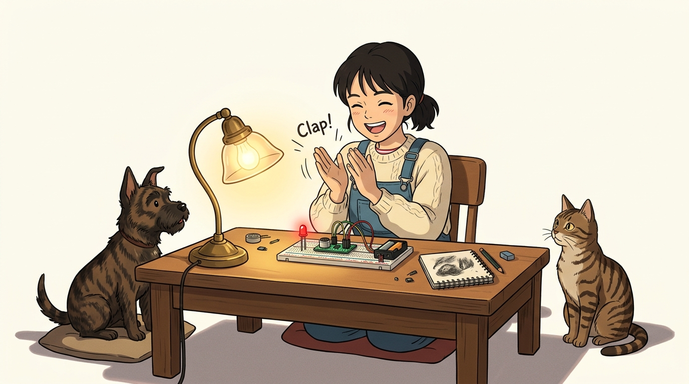
도로시와 마법 멘토 지니의 마이크로폰 음성 감지와 박수 스위치
- 👧 도로시: “지니야! 침대에 누워서 일어나기 귀찮을 때 ‘짝! 짝!’ 박수를 치면 방 안의 전등이 탁 켜지고, 다시 치면 스르륵 꺼지는 마법 같은 박수 스위치는 어떻게 만들어?”
- 🐱 지니: “공기를 타고 전달되는 소리의 떨림(음파)을 전압 신호로 바꿔주는 일렉트릿 콘덴서 마이크(사운드 센서) 를 사용하면 된단다! 오늘 아두이노에게 소리를 듣는 귀를 선물해 주자!”
-
🐶 토토: “바우! (토토가 ‘멍멍!’ 짖어도 불이 켜지게 해보자 멍!)”
- 🖥️ 강의 슬라이드: slides.md
1. 사운드 센서 모듈의 외형과 구성 🔍
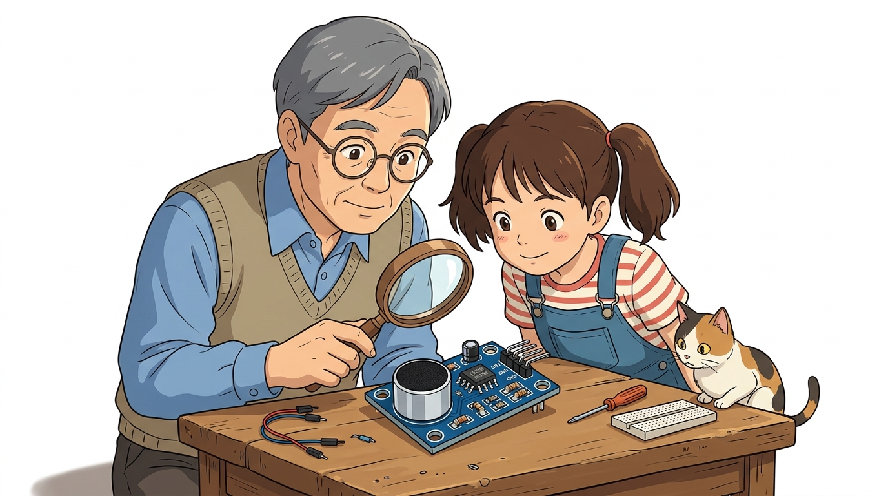
사운드 센서는 주변 환경에서 발생하는 소리의 크기(음압, Sound Pressure)를 실시간 전기 신호로 변환하는 오디오 감지 모듈입니다.
- 초소형 마이크로폰 탑재: 전면부에 직경 6mm/9mm의 고감도 일렉트릿 마이크(ECM)가 장착되어 있어 20Hz~20kHz 가청 주파수 대역의 음향을 수음합니다.
- 아두이노의 인공 청각: 아두이노는 귀가 없지만, 사운드 센서를 연결하면 손뼉 소리, 목소리, 노크 소리, 호루라기 소리를 명확히 판별할 수 있습니다.
2. 사운드(소리) 센서의 개요와 실생활 활용 🎙️
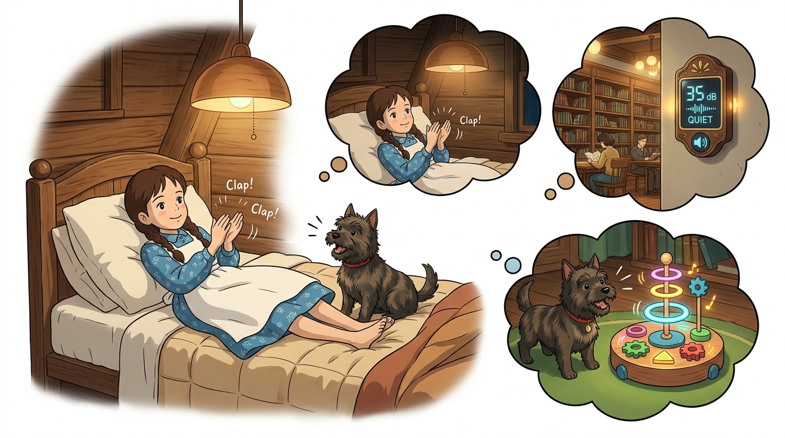
소리 감지 기술은 음성 인터페이스, 보안 장비, 스마트 홈 자동화 시스템 등 현대 생활 곳곳에 깊숙이 적용되어 있습니다.
- 박수 스위치 (Clap Switch): 거동이 불편한 환자나 어린이를 위해 손뼉 소리 하나로 전등과 선풍기를 켜고 끄는 무선 조작 스위치.
- 소음 경고 신호등: 도서관, 독서실, 초등학교 교실에서 소음이 기준치를 초과하면 노란색/빨간색 불이 켜지는 시각적 소음 피드백 장치.
- 무인 방범 음향 감지기: 야간에 침입자의 발소리나 유리창이 깨지는 고주파 파열음을 즉각 포착하여 관제실로 전송하는 보안 시스템.
- 비트 반응형 음악 조명: 음악의 리듬과 비트에 맞추어 RGB LED 스트립이 화려하게 번쩍이는 파티 조명.
3. 음파(Sound Wave)의 물리적 전파 원리 🌊
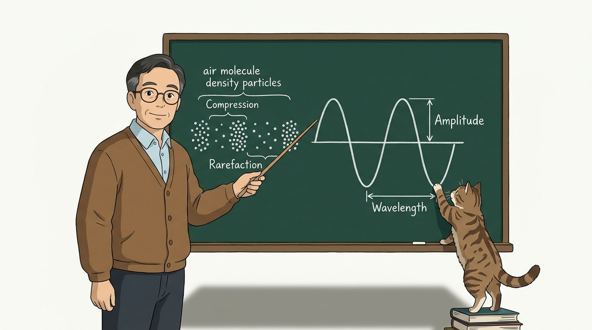
소리는 진동하는 물체가 주변 매질(공기)을 밀고 당기면서 전파되는 종파(Longitudinal Wave, 소한 부분과 밀한 부분의 파동)입니다.
- 밀(Compression, 압축):
- 손뼉을 마주칠 때 공기 분자가 강하게 압축되어 순간적으로 기압이 높아집니다.
- 소(Rarefaction, 팽창):
- 압축된 공기가 지나간 직후 공기 분자가 희박해지며 기압이 기준치보다 낮아집니다.
- 음압의 파동 진폭:
- 큰 소리(박수, 고함)일수록 공기 분자의 압축-팽창 압력 차이(진폭, Amplitude)가 거대해지며 마이크 센서에 큰 전압 진동을 유발합니다.
4. 일렉트릿 콘덴서 마이크(ECM)의 작동 원리 🔬
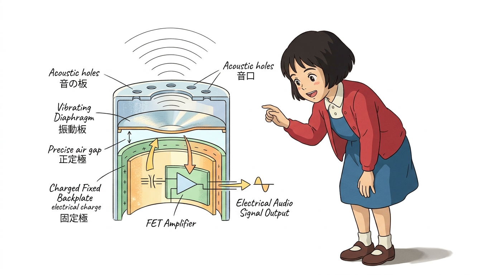
센서 앞부분의 은색 원통형 부품(ECM) 내부에서 공기 진동이 전기로 바뀌는 과학적 메커니즘입니다.
- 얇은 전도성 진동판 (Diaphragm):
- 마이크 앞면에는 음파의 미세한 떨림에도 즉각 반응하는 극박 금속박(또는 금 증착 마일러 필름) 진동판이 설치되어 있습니다.
- 고정 전극판 (Backplate):
- 진동판 뒤쪽에 닿을 듯 말 듯 일정한 간격을 두고 고정 금속판이 평행하게 놓여 있어 하나의 평행판 커패시터(콘덴서)를 형성합니다.
- 정전용량 변화에 따른 전압 유도:
- 소리 음파가 진동판을 때리면 두 판 사이의 거리($d$)가 수 마이크로미터 단위로 요동칩니다: \(C = \epsilon \frac{A}{d}\)
- 거리가 좁아졌다 멀어지면서 정전용량($C$)이 격렬하게 변하고, 충전되어 있던 전하에 의해 마이크로볼트($\mu\text{V}$) 단위의 미세 교류 음향 전압이 발생합니다!
- 내장 FET 및 연산증폭기(Op-Amp, LM393):
- 마이크 내부의 초소형 FET 트랜지스터와 모듈의 LM393 증폭기가 이 미세 전압을 수백 배 증폭하여 아두이노가 읽을 수 있는 0~5V 전압으로 가공합니다.
5. 센서 모듈의 핀 구성과 감도 조절 가변저항 🎛️
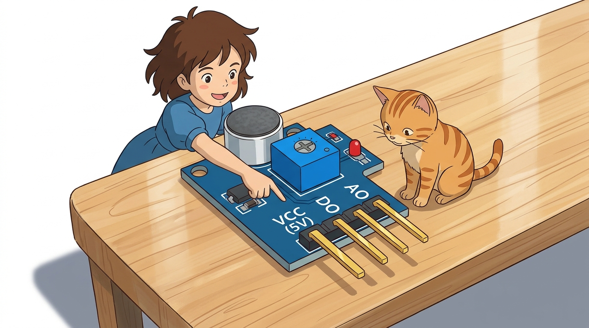
사운드 센서 모듈의 핀 역할과 최적의 감도를 맞추는 튜닝 요령입니다.
| 핀 기호 | 주요 역할 | 아두이노 연결 | 기능 상세 설명 |
|---|---|---|---|
| VCC | 전원 공급 (+) | 5V 핀 | 모듈 내부 증폭기 및 마이크 바이어스 구동 전원 (DC 3.3V ~ 5V) |
| GND | 전원 접지 (-) | GND 핀 | 0V 기준 접지 |
| OUT (AO) | 아날로그 음압 출력 | A0번 핀 | 실시간 음량 크기에 비례하는 0~1023 연속 전압 파형 출력 |
| DO | 디지털 스위칭 출력 | 디지털 7번 핀 | 기준 음량 초과 시 LOW(0V) 또는 HIGH(5V) 스위치 신호 |
- 파란색 감도 조절 가변저항 (Potentiometer):
- 시계 방향 회전 (둔감 모드): 작은 잡음을 무시하고 아주 큰 박수 소리나 외침에만 반응하도록 설정합니다.
- 반시계 방향 회전 (예민 모드): 작은 속삭임이나 펜 굴러가는 소리에도 민감하게 반응하도록 설정합니다.
6. 아두이노와 사운드 센서 브레드보드 회로 배선도 🔌
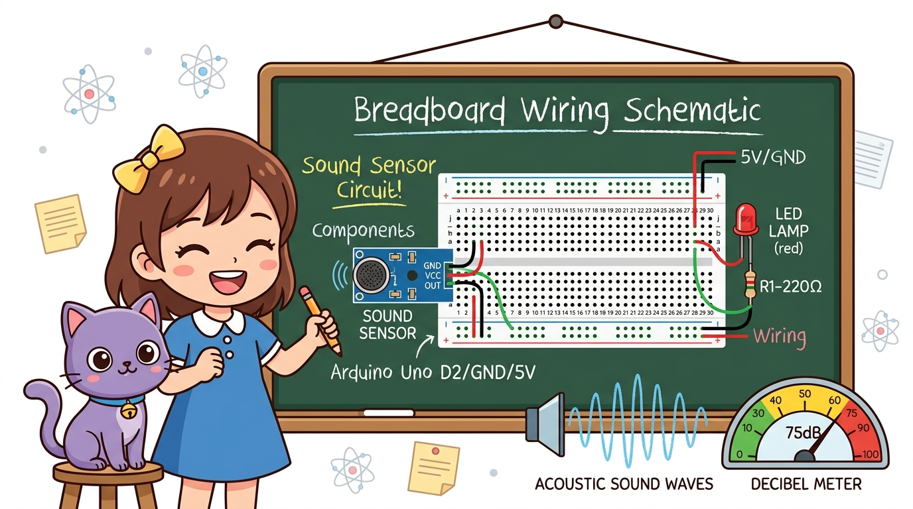
아두이노 우노 보드에 사운드 센서와 박수로 켜고 끌 제어용 LED를 브레드보드로 결선합니다.
📌 결선 순서 가이드
- 사운드 센서 전원선 배선:
- 센서 VCC 핀 ➔ 아두이노 5V 핀 연결
- 센서 GND 핀 ➔ 아두이노 GND 핀 연결
- 사운드 신호선 배선:
- 센서 OUT(AO) 핀 ➔ 아두이노 A0번 아날로그 핀 연결
- 제어용 LED 램프 배선:
- 아두이노 디지털 9번 핀 ➔ $220\Omega$ 저항 ➔ LED 긴 다리(애노드, +)
- LED 짧은 다리(캐소드, -) ➔ 아두이노 GND 핀 연결
7. 칠판 교실: 사운드 감지 파형과 클랩 토글 로직 🎨
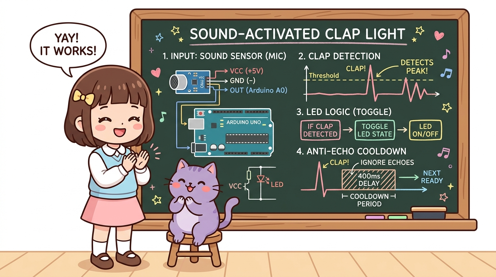
지니 선생님이 칠판에 정리해 준 박수 감지 알고리즘과 잔향 방지 쿨다운의 비밀입니다!
- 음파 피크 감지: 평상시 조용한 기준 전압 위에 손뼉을 치는 순간 전압이 임계값(Threshold)을 훌쩍 넘는 스파이크 피크를 그립니다.
- 상태 토글(Toggle): 피크가 감지되면 전등 변수
lampState = !lampState;로 불빛 상태를 반전시킵니다. - 400ms 에코 쿨다운: 박수 소리가 방 안 벽면에 부딪히며 생기는 잔향(Echo) 때문에 불이 꺼졌다 다시 켜지는 오작동을 막기 위해 0.4초간 입력을 쉬어갑니다!
8. 실습 ①: 실시간 소리 크기 모니터링 전체 스케치 💻
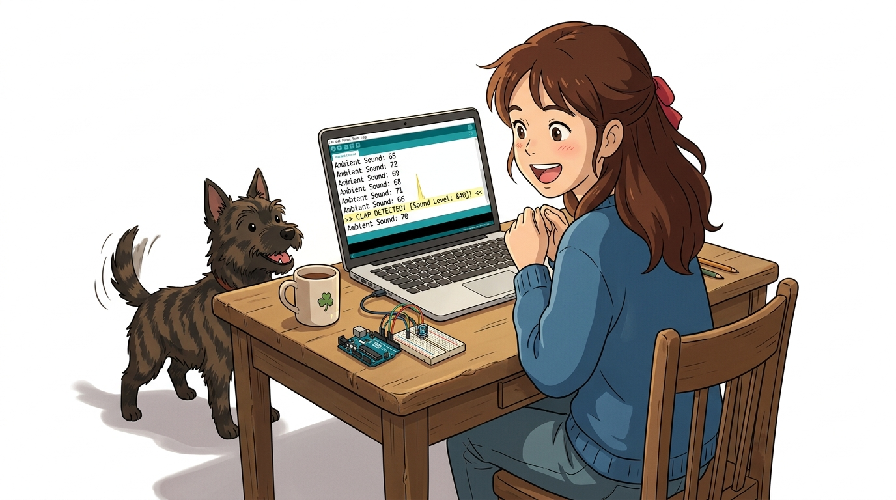
현재 내 방 안의 기본 소음 크기를 측정하고 박수를 칠 때 숫자가 얼마나 치솟는지 확인하는 스케치입니다.
// ==========================================
// 07.5-3 사운드 센서 실시간 소음 크기 측정
// ==========================================
const int soundPin = A0; // 사운드 센서 아날로그 출력 핀
void setup() {
Serial.begin(115200); // 초고속 시리얼 통신 개시 (115200 bps)
pinMode(soundPin, INPUT);
Serial.println("=========================================");
Serial.println(" Sound Microphone Sensor Active! ");
Serial.println(" 조용히 있을 때와 박수 칠 때를 비교해보세요 ");
Serial.println("=========================================");
}
void loop() {
// 1. 소리의 실시간 전압 크기(0~1023)를 정밀 측정
int soundLevel = analogRead(soundPin);
// 2. 시리얼 모니터에 현재 소음 값 출력
Serial.print("현재 소리 크기: ");
Serial.println(soundLevel);
// 3. 소리 파동은 변화가 매우 빠르므로 50ms마다 측정
delay(50);
}
9. 코드 상세 해설 ①: 기준 소음과 박수 피크(Peak) 감지 📊

소리 센서를 다룰 때 가장 중요한 주변 소음 보정(Calibration) 원리입니다.
- 평상시 조용한 상태의 기준 전압 (DC 바이어스):
- 마이크 내부 프리앰프의 바이어스 회로로 인해 아무 소리도 내지 않아도 보통 약 500 ~ 520 안팎의 중심 전압이 측정됩니다.
- “짝!” 박수를 칠 때의 파형 스파이크:
- 손뼉을 치는 찰나의 수십 밀리초 동안 강한 음파가 진동판을 강타하며 전압이 600, 750 이상으로 급격히 치솟습니다.
- 임계값 설정의 황금률:
- 조용한 상태의 값(약 510)보다 약 100 이상 높은
soundThreshold = 620정도로 조건을 설정하면, 일상적인 대화 소리와 명확한 박수 소리를 똑똑하게 분별할 수 있습니다!
- 조용한 상태의 값(약 510)보다 약 100 이상 높은
10. 실습 ②: 짝! 박수로 켜고 끄는 클랩 토글 스위치 전체 스케치 👏💡
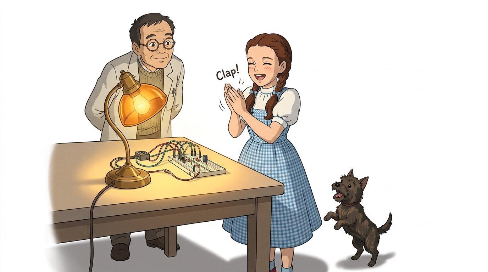
박수를 한 번 치면 불이 켜지고, 다시 한 번 치면 불이 꺼지는 스마트 클랩 무드등 전체 코드입니다.
// ==========================================
// 07.5-3 스마트 박수 스위치 토글 조명등
// ==========================================
const int soundPin = A0; // 사운드 센서 아날로그 핀
const int ledPin = 9; // 제어용 LED 램프 핀
const int soundThreshold = 620; // 박수 소리 판정 기준값 (환경에 맞춰 조절)
int lampState = LOW; // 전등 켜짐/꺼짐 상태 (초기: 소등)
void setup() {
Serial.begin(115200);
pinMode(soundPin, INPUT);
pinMode(ledPin, OUTPUT);
digitalWrite(ledPin, lampState);
}
void loop() {
int soundLevel = analogRead(soundPin);
// 기준치(620) 이상의 큰 박수 소리가 감지되었을 때!
if (soundLevel > soundThreshold) {
// 1. 전등 상태를 정반대로 뒤집기 (토글)
lampState = !lampState;
digitalWrite(ledPin, lampState);
Serial.print("👏 [CLAP DETECTED!] 박수 감지! -> 전등 상태: ");
Serial.println(lampState == HIGH ? "💡 ON 켜짐!" : "🌑 OFF 꺼짐!");
// 2. 박수 소리의 잔향(에코)으로 인한 중복 트리거 방지 쿨다운
delay(400);
}
}
11. 코드 상세 해설 ②: 잔향(Echo) 방지 400ms 쿨다운 알고리즘 🛡️
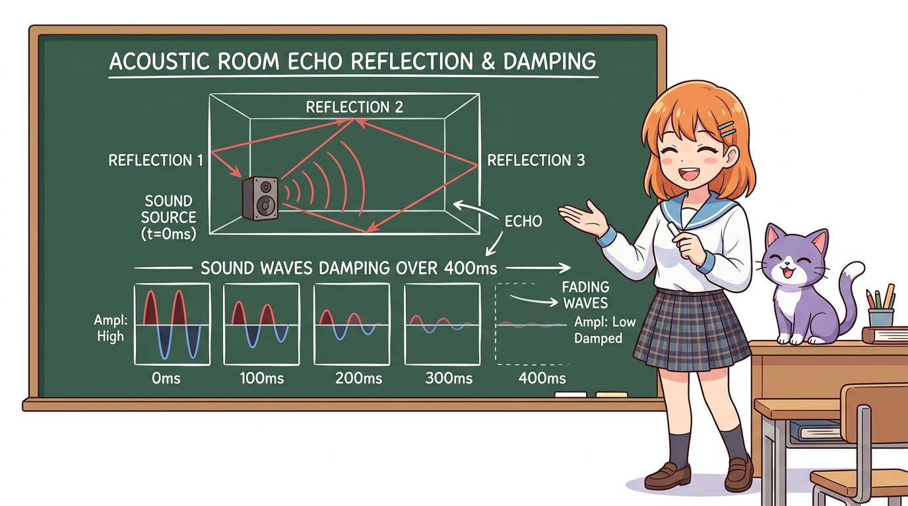
- 실내 음향 잔향(Reverberation & Echo)의 복병:
- 사람이 손뼉을 “짝!” 하고 딱 한 번 쳐도, 그 음파는 방 안의 벽, 천장, 바닥에 반사되며 약 200~300ms 동안 공기 중에 맴돕니다.
- 쿨다운이 없을 때의 대참사:
- 만약
delay(400);쿨다운이 없다면, 아두이노는 잔향 파편들을 독립된 박수로 오해하여 0.3초 동안 불을 켜졌다 꺼졌다를 4~5번 반복하며 엉뚱한 상태로 멈추게 됩니다.
- 만약
- 400ms 안정화 딜레이의 마법:
- 박수가 감지된 직후 0.4초 동안 센서 입력을 일시 정지(블로킹)함으로써 소리의 메아리가 완전히 소멸할 때까지 기다려 완벽한 1회 토글 동작을 보장합니다!
🌟 도로시와 지니의 핵심 요약 노트! 🏆

📋 07.5-3 사운드 센서 정복 체크리스트
- 일렉트릿 콘덴서 마이크(ECM) 원리: 음파가 진동판을 흔들 때 발생하는 정전용량 변화를 전압 신호로 변환하는 메커니즘을 마스터했습니다.
- 기준 전압과 피크 감지: 평상시 중심 전압(약 512)과 박수 발생 시의 전압 스파이크(620 이상)를 이용한 임계치 필터링을 체득했습니다.
- 클랩 토글(Toggle) 스위치: 박수 한 번으로 조명을 켜고 다시 치면 끄는 상태 반전 프로그래밍을 완성했습니다.
- 잔향(Echo) 방지 400ms 딜레이: 실내 반사 음향 노이즈로 인한 중복 트리거 오작동을 차단하는 쿨다운 알고리즘을 배웠습니다.
👧 도로시: “공기의 진동이 마이크 속 얇은 판을 흔들어 전압 파형을 만들고, 그 파형이 기준선을 넘을 때마다 불을 껐다 켰다 하는 거였구나! 박수 칠 때마다 불이 켜지니까 진짜 스마트 홈 주인공이 된 기분이야!”
🐱 지니: “맞아! 여기에 잔향 방지 딜레이를 넣어 오작동을 막는 것이 프로그래밍의 묘미란다. 조금 더 업그레이드하면 ‘짝! 짝!’ 두 번 쳐야만 켜지는 더블 클랩(Double Clap) 안전 스위치도 만들 수 있어.”
🐶 토토: “바우! 다음 시간에는 활활 타오르는 불빛을 0.1초 만에 감지하는 ‘07.5-4 불꽃 감지 센서’를 정복하러 가자 멍!”